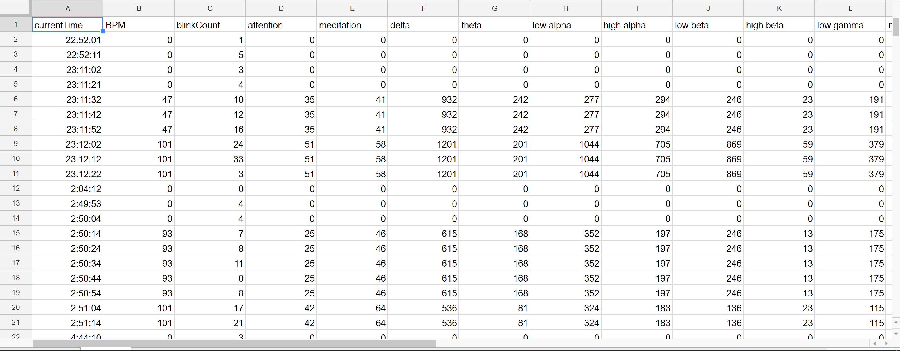

is it all i am all it is
a one-sided conversation about me
to you.
Dreamgazer
Dreamgazer is a mostly conceptualized VR / AR, EEG, tDCS (transcranial direct current stimulation) designed to be 3D printed and then hand-assembled. Dreamgazer's software was planned to be intergrated with an AI (Emoter) that would train users to dream, and guide them through their dreams vocally by talking and responding to biofeedback.
I started practicing lucid dreaming back in high school. In 2011, I successfully managed to consistently have lucid dreams, and produced a research paper (for school) documenting my experiences, as well as creating a visual dream journal with dream descriptions and analysis. As later years went by, several products had been developed and released, all promising to make lucid dreams a reality easy for everyone. I felt that all those products were underutilizing the capabilities of their tech, and that none offered the feature sets at the advanced, in-depth level I was looking for.
Lucid dreaming in wearable tech is something I will continue exploring, but it may be a long time before I get around to making any more iterations of Dreamgazer. I have plans to open-source the early software, as well as the 3D printed plans.

The plans were made to be fully functional, with the proper materials and construction once printed.

Dreamgazer was designed with a VR interface, in Unity.

The full process of Dreamgazer's functionality.

In 2015, I made a wearable prototype to induce lucid dreaming using an Arduino, a pulse sensor, the NeuroSky MindWave (EEG), and Processing (for software). I was able to detect when I fell asleep within an accuracy of five minutes, and was able to successfully induce lucid dreaming by playing music when REM sleep was detected.

.png)


I used Processing to visualize my dreams and record my biometric data over the course of several different nights. The data was automatically fed into a spreadsheet for easy analysis.
You can see and use the data yourself here (if the data does turn out to be useful for people, I'll go back and separate it into each night to organize).
